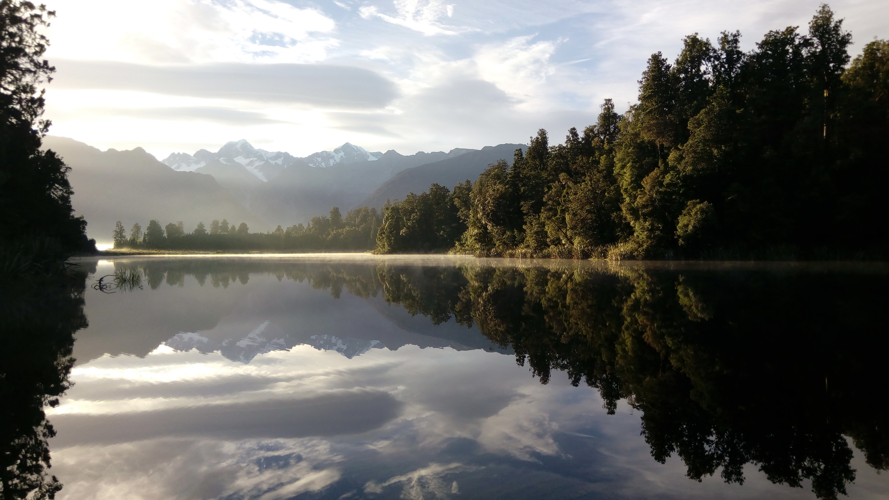
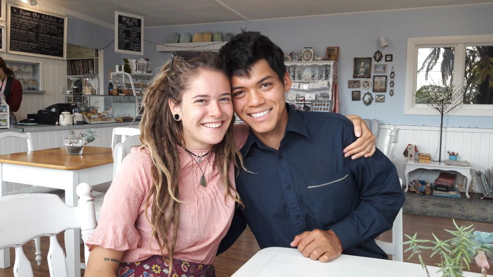
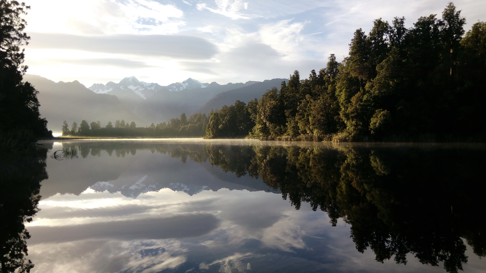
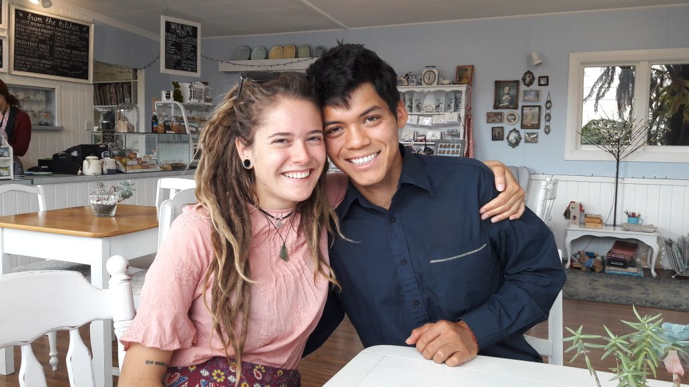

Travel Highlights
Travelling in New Zealand:
Meeting my husband in New Zealand:
Roadtrip through Tasmania:

Exploring Costa Rica:

Seightseeing in Guanajuato:
Driving the Great Ocean Road:

My name is Nele, and I am a data science major at Winona State University.
I also work at Fastenal as an MDM Data Specialist.
| Activity | Timeframe |
|---|---|
| Visit my family in Germany | May 2025 |
| Bikepack Europe | May - September 2025 |
| Walk the Camino de Santiago through France and Spain | October 2025 |
| Backpack Southeast Asia | November 2025 - May 2026 |
Travelling in New Zealand:
Meeting my husband in New Zealand:
Roadtrip through Tasmania:
Exploring Costa Rica:
Seightseeing in Guanajuato:
Driving the Great Ocean Road:
"I leave Sisyphus at the foot of the mountain. One always finds one's burden again. But Sisyphus teaches the higher fidelity that negates the gods and raises rocks. He too concludes that all is well. This universe henceforth without a master seems to him neither sterile nor futile. Each atom of that stone, each mineral flake of that night-filled mountain, in itself, forms a world. The struggle itself toward the heights is enough to fill a man's heart. One must imagine Sisyphus happy."
- Albert Camus